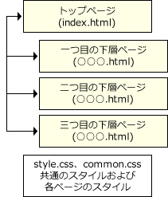

Webサイトの概要・仕様
以下の「テーマ」「ページ構成」「フォルダーおよびファイル構成」「仕様」に従い、Webサイトを完成させなさい。
テーマ
- 実技問題操作練習のWebサイトである。
- このページは操作練習です。ここには、トップページの概要が掲載されます。
- このページは操作練習です。ここには、一つ目の下層ページの概要が掲載されます。
- このページは操作練習です。ここには、二つ目の下層ページの概要が掲載されます。
- このページは操作練習です。ここには、三つ目の下層ページの概要が掲載されます。
ページ構成
下図の通りのページ構成とし、トップページと各ページは相互にリンクさせること。

フォルダーおよびファイル構成
- 「site」フォルダー内に必要なファイルを作成・修正し、Webサイトを完成させること。
- 問題で使用する画像ファイルは、「images」フォルダー内のファイルを使用すること。
- 問題で使用するCSSファイルは、「css」フォルダー内のファイルを使用すること。
- 「material」フォルダーには、「start_rensyu.html」に関連するファイルが格納されている。関連するファイルの閲覧は「start_rensyu.html」からWebブラウザーで開き、確認すること。
- 「実技用」フォルダー
- start_rensyu.html
- 「material」フォルダー
- 「site」フォルダー
- index.html
- ○○○.html ★新規作成
- ○○○.html ★新規作成
- ○○○.html ★新規作成
- 「css」フォルダー
- common.css
- style.css
- 「images」フォルダー
- ○○○.png
- ○○○.gif
- ○○○.jpg
仕様
以下の仕様で記述すること。
- マークアップ言語：HTML5
- スタイルシート：CSS 2.1およびCSS3
- 文字コード：UTF-8（BOM付推奨）
- 改行コード：CR+LF